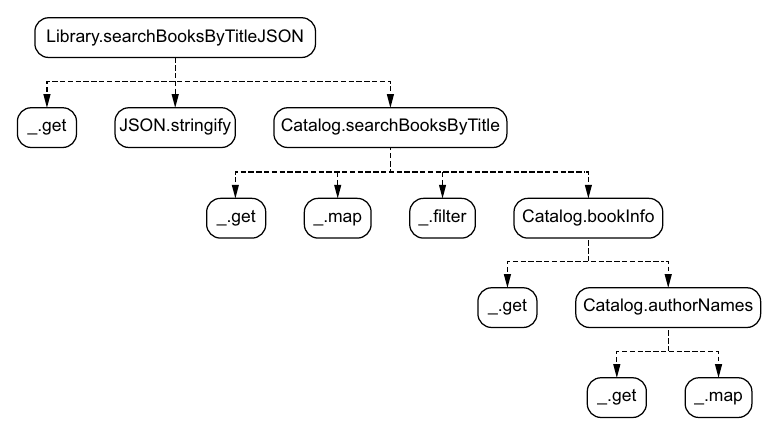
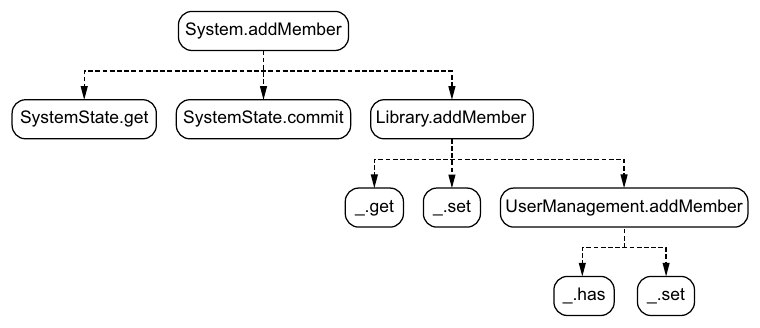

فصل ۶ · صص. ۱۱۰–۱۳۶
تستهای unit
Unit tests
Data-Oriented Programming, 1st Edition
در سیستمی دادهگرا بیشتر تابعها داده میگیرند و داده برمیگردانند، پس تستی unit آنقدر آسان است که در کافه نوشتنی باشد. هر موردی از تست همان سه قدم را دارد: ورودی را بسازید، خروجی چشمداشته را بسازید، و f(input) را با آن بسنجید. سنجشی عمومی و بازگشتی، یعنی _.isEqual از Lodash، سنجیدن را میکند، و معمولاً هیچ نیازی به mock نیست (صص. ۱۱۰–۱۱۲). جو درخت صدا زدن تابعها از جریانی کد را روی دستمالی میکشد و با آن کیفیت و کمیت موردهای تست را تصمیم میگیرد (صص. ۱۱۳–۱۱۵):
- تابعهای عمیق در درخت دادهی سادهتری میگیرند و موردهای تست بیشتری میخواهند.
- تابعهای نزدیک به ریشه دادهی پیچیدهتری میگیرند و موردهای کمتری میخواهند، چون فرض میگیرید تابعهایی که صدایشان میزنند از پیش تست شدهاند (صص. ۱۱۹–۱۲۱).
ورودی تست باید کمینه باشد، چون اعتبار داده به زمینه بسته است (ص. ۱۱۷). داده را بسنجید، هیچوقت رشتهی JSON را (صص. ۱۲۱–۱۲۳). پرسشی با حرف کوچک اشکالی واقعی را در جستوجو رو میکند (صص. ۱۲۴–۱۲۵). mutationها از راه فاز حسابشان تست میشوند، با سنجیدن کل mapهای state، موردهای منفی هم. تابع باstate System.addMember با خواندن state پس از آن صدا زدن تست میشود (صص. ۱۲۶–۱۳۳). بخش با پیچی تمام میشود: Albatross پروژهی بلندمدت نانسی را میبرد، ولی مهندسان تئو نتیجه میگیرند که DOP «در مقیاس خوب کار نمیکند» (ص. ۱۳۴).
فهرست خود فصل (از فهرست مطالب کتاب)
از فهرست خود کتاب، یعنی bookmarkهای PDF؛ شمارهی صفحهها چاپیاند.
- ۶.۱ سادگی موردهای دادهگرای تست — ص. ۱۱۰
- ۶.۲ تستهای unit برای کد دستکاری داده — ص. ۱۱۲
- ۶.۲.۱ درخت صدا زدن تابعها — ص. ۱۱۳
- ۶.۲.۲ تستهای unit برای تابعهای پایین درخت — ص. ۱۱۵
- ۶.۲.۳ تستهای unit برای nodeهای درخت — ص. ۱۱۹
- ۶.۳ تستهای unit برای پرسشها — ص. ۱۲۱
- ۶.۴ تستهای unit برای mutationها — ص. ۱۲۶
- خلاصه — ص. ۱۳۴
از کتاب
مقدمه
فصل با منطق موردهای تست سروکار دارد، نه با اجراگر یا چارچوب تست: «چارچوب تست محبوبتان را به کار ببرید» (صص. ۱۱۸–۱۱۹).
از کتاب
۶.۱ سادگی موردهای دادهگرای تست
تئو و جو در «La vie est belle» کار میکنند، کافهای فرانسوی نزدیک پل گلدنگیت (ص. ۱۱۰). قدمهای یک مورد تست (ص. ۱۱۱):
- ورودی داده را بسازید، یعنی
dataIn. - خروجی چشمداشته را بسازید، یعنی
dataOut. - مقدار
f(dataIn)را باdataOutبسنجید.
سنجیدن mapها یعنی فیلدبهفیلد و بازگشتی سنجیدن. تئو نمیتواند در کافه کد بازگشتی بنویسد، ولی لازم هم ندارد: چون داده عمومی است، تابع _.isEqual mapها و آرایهها را بازگشتی میسنجد (listingهای ۶.۱ و ۶.۲، صص. ۱۱۱–۱۱۲).
تست transformهای Python و مدلهای SQL در GitLab CI اجرا میشود و سادهترینش ورودی داده و خروجی داده است.
?نوبت شما · تابع hash_fields را چطور تست میکنید بیآنکه به دیتابیس یا ClickHouse نیاز باشد؟دیدن پاسخ
یک dict ورودی، یک dict انتظاری و یک assert برابری؛ چون تابع خالص است و داده را برمیگرداند، هیچ mock یا fixture لازم نیست. کتاب میگوید تست دادهگرا همین سادگی را دارد (صص. ۱۱۰–۱۱۲).
از کتاب
۶.۲ تستهای unit برای کد دستکاری داده
کد زیر تست همان پرسش جستوجوی فصل ۳ است (listing ۶.۴، ص. ۱۱۳). کمی بازآرایی شده: تابع authorNames حالا authorIds را میگیرد، نه کتابی را.
۶.۲ تستهای unit برای کد دستکاری داده
۶.۲.۱ درخت صدا زدن تابعها


JSON، پس تست یک سطح بالاتر آغاز میشود.درخت را تا رسیدن به تابعی بیرون کدبیس برنامه، یا تابعی که هیچ صدا نمیزند، باز میکنید. تابع Catalog.bookInfo فرزند searchBooksByTitle است گرچه درون تابعی بینام صدا زده میشود (ص. ۱۱۴).
۶.۲ تستهای unit برای کد دستکاری داده
۶.۲.۲ تستهای unit برای تابعهای پایین درخت
از عمیقترین تابع برنامه آغاز کنید، یعنی Catalog.authorNames(catalogData, authorIds) که authorNames میدهد (شکل ۶.۲، ص. ۱۱۵). جدول موردهای تئو (جدول ۶.۱، ص. ۱۱۶) از catalogی با دو نویسنده و authorIdsی کار میکشد که تهی است یا یک شناسه دارد یا دو. موردهای بیشتری پی میآیند (listing ۶.۹، ص. ۱۱۸):
- دادهی catalog تهی.
- شناسهی نویسندههای ناشناس، که در خروجی
undefinedمیدهند.
جو ورودی را آب میکند. مقدار کامل catalogData در listing ۶.۶ میتواند booksByIsbn و bookIsbns نویسندهها را از دست بدهد (listing ۶.۷، ص. ۱۱۷). تئو اعتراض میکند که این catalogData معتبر نیست. جو: در DOP، اعتبار به زمینه بسته است. version کمینه برای searchBooksByTitle نامعتبر است ولی برای bookInfo و authorNames کاملاً معتبر، که تنها authorsById را میخوانند (ص. ۱۱۷).
۶.۲ تستهای unit برای کد دستکاری داده
۶.۲.۳ تستهای unit برای nodeهای درخت
برای Catalog.bookInfo، تئو آغاز میکند به فهرست کردن همانقدر مورد که برای authorNames. جو بازش میدارد: فرض بگیرید تابعهایی که صدا میزند از پیش پوشیده و سالماند، و یک مورد کمینه بنویسید (listing ۶.۱۱، صص. ۱۱۹–۱۲۰). همان یک مورد رکوردها را درگیر میکند، پس دادهاش پیچیدهتر است (ص. ۱۲۰).
| جایگاه در درخت | پیچیدگی داده | شمار موردهای تست (جدول ۶.۲، ص. ۱۲۱) |
|---|---|---|
| نزدیک ریشه، عمق کمتر | بالاتر | کمتر |
| عمیق در درخت، عمق بیشتر | پایینتر | بیشتر |
Vault note: ستون نخست آن جدول «عمق در درخت» است، که عمق «کمتر» یعنی نزدیک ریشه. نکتهی درست پیش از آن میگوید «تابعهایی که در سطحی پایینتر از درخت پیدا میشوند … دادهی کمپیچیدهتری درگیر میکنند»، که «پایینتر» را عمیقتر روی نقاشی میخواند. هر دو همان یک قاعده را وصف میکنند: nodeهای عمیق دادهی ساده و موردهای زیاد میگیرند (صص. ۱۲۰–۱۲۱).
امتحان کنید
درخت صدا زدن تابعها
باز کردن در صفحهی کامل ↗ · این شبیهسازی مدل خود vault از سازوکاری است که کتاب شرح میدهد.
از کتاب
۶.۳ تستهای unit برای پرسشها
تابع Library.searchBooksByTitleJSON دادهی کتابخانه و پرسشی میگیرد و رشتهای JSON برمیگرداند (شکل ۶.۴، ص. ۱۲۱). ایدهی نخست تئو، یعنی سنجیدن با رشتهای چشمداشته، رد میشود (صص. ۱۲۲–۱۲۳):
- دو رشتهی
{"title":"Watchmen","publicationYear":1987}و{"publicationYear":1987,"title":"Watchmen"}فرق دارند ولی همان یک داده را سریالی میکنند (listing ۶.۱۳). - پس بازش کنید، یعنی دادهای را بسازید که سریالیاش همان رشته است، با
JSON.parseبومی، و با_.isEqualبسنجید (listingهای ۶.۱۴ و ۶.۱۵).
تست Catalog.searchBooksByTitle خوشایندتر است: داده برمیگرداند، پس چیزی برای باز کردن نیست، و ورودیاش پوششی libraryData نمیخواهد (صص. ۱۲۴–۱۲۵). بعد جو پرسشی تمامحرفکوچک میخواهد. مقدار "watchmen" شکست میخورد، که هدف تستهای unit همین است: یافتن اشکال. تئو با حرفکوچک کردن هر دو پرسش و عنوان پیش از includes درستش میکند (listingهای ۶.۱۸ تا ۶.۲۰، ص. ۱۲۵).
کوئریهای Silver و Gold هم پرسشاند و میشود آنها را با دادهی کوچک تست کرد.
?نوبت شما · چطور یک مدل Gold را در GitLab CI تست میکنید؟دیدن پاسخ
یک ClickHouse موقت در Docker، چند ردیف ورودی شناختهشده، اجرای کوئری و مقایسهی خروجی با جدول انتظاری. چون کوئری داده میگیرد و داده میدهد، تست همان شکل تست تابع خالص را دارد (صص. ۱۲۲–۱۲۶).
امتحان کنید
میز تست
باز کردن در صفحهی کامل ↗ · این شبیهسازی مدل خود vault از سازوکاری است که کتاب شرح میدهد.
از کتاب
۶.۴ تستهای unit برای mutationها


SystemState را با حسابهای سرراست زیر Library.addMember قاطی میکند.از تابعهای برنامه، آنهای SystemState عمومیاند و بیرون هر mutation ویژهای تست میشوند. سه تا میماند، و گوشت واقعی در UserManagement.addMember است؛ آن دو تای دیگر پوششند (ص. ۱۲۷). تست mutationی کوشش بیشتری از تست پرسشی میخواهد، چون mutation state سیستم تازهای را از state کنونی و آرگومانهایش حساب میکند، در حالی که پرسش دادهی پاسخ برمیگرداند (شکل ۶.۶، ص. ۱۲۷). تستهای UserManagement.addMember (صص. ۱۲۷–۱۳۰):
| مورد | پیش | چشمداشته |
|---|---|---|
| state تهی (listing ۶.۲۲) | {} | مقدار membersByEmail با jessie |
| عضوهای موجود (listing ۶.۲۳) | franck | هر دو franck و jessie |
| منفی (listing ۶.۲۴) | jessie | استثنای «Member already exists.»، که با try/catch گرفته و سنجیده میشود |
تئو میپذیرد که همیشه موردهای منفی را از یاد میبرد چون خوشبین است (ص. ۱۲۹). تابع Library.addMember تنها مورد عضوهای موجود را میگیرد، چون صداشدهاش پوشیده است (listing ۶.۲۵، صص. ۱۳۰–۱۳۱).
بخش باstate. تابع System.addMember هیچ برنمیگرداند؛ state سیستم را عوض میکند (شکل ۶.۷، ص. ۱۳۱). «گرچه DOP میگذارد اندازهی بخش باstate کدمان را کم کنیم، آن بخش هنوز هست» (ص. ۱۳۱). تست یک SystemState میسازد، مقدار libraryStateBefore را commit میکند، mutation را اجرا، و systemState.get() را با state چشمداشته با _.isEqual میسنجد. مقدار state سیستم mapی است مانند هر map دیگری (listing ۶.۲۷، صص. ۱۳۲–۱۳۳). نوشتنش «آرامش دفتر را میخواهد»، پس با تلهکابین به Albatross برمیگردند (ص. ۱۳۲).
پیش رفتن (ص. ۱۳۴): سیستم Klafim در بازار جا میگیرد و Albatross پروژهای بلندمدت با بودجهای خوب میبرد. ولی پس از بازآرایی نمونهی اولیه به DOP و تحلیلی عمیق با مهندسانش، تئو نتیجه گرفته که DOP به نمونهی اولیه میخورد ولی «در مقیاس خوب کار نمیکند». میپذیرد برای خداحافظی جو را ببیند؛ و داستان در سرآغاز بخش ۲ پی میگیرد.
مرور
بدهبستانها در یک نگاه
| گزینش | سود | خرج |
|---|---|---|
تابع عمومی _.isEqual | یک سنجش برای هر دادهای؛ بی هیچ کد فیلدبهفیلد | همه را میسنجد، فیلدهایی را هم که تستی اهمیتشان نمیدهد |
| دادهی ورودی کمینه | نوشتن و خواندنش آسان | تنها در زمینهی آن تابع معتبر (ص. ۱۱۷) |
| فرض گرفتن تستشدن صداشدهها | موردهای خیلی کمتر نزدیک ریشه (ص. ۱۱۹) | رخنهای در تست تابعی عمیق رو به بالا پخش میشود |
| باز کردن JSON و بعد سنجیدن | ترتیب فیلد دیگر مهم نیست (ص. ۱۲۲) | یک قدم بیشتر برای خروجیهای سریالی |
| تست کردن پوشش باstate | مسیر commit را میپوشاند | یک SystemState واقعی و راه انداختنش را میخواهد (صص. ۱۳۱–۱۳۳) |
مرور
نکتههای کلیدی
- موردی دادهگرا از تست: عبارت
_.isEqual(f(dataIn), dataOut)(listing ۶.۳، ص. ۱۱۲). به mock کم نیاز میشود (ص. ۱۱۱). - درخت صدا زدن تابعها تابع
fرا در ریشه دارد، تابعهایی که هر node صدا میزند را بهشکل فرزندانش، و تابعهای بیرون از کدبیس را بهشکل برگ. صدا زدنی درون تابعی بینام هم فرزند به شمار میآید (ص. ۱۱۴). - فرض بگیرید صداشدهها تست شدهاند. تستی unit برای تابعی تنها موردی کمینه میخواهد برای آنچه صداشدههایش از پیش میپوشانند، که شمار موردهای تست را بهجد کم میکند (ص. ۱۱۹).
- عمق، پیچیدگی داده را با شمار موردها بدهبستان میکند (جدول ۶.۲، ص. ۱۲۱).
- دادهی کمینه به کار ببرید. اعتبار داده به زمینه بسته است: مقدار
catalogDataبا تنهاauthorsByIdبرای جستوجو نامعتبر است ولی برایauthorNamesمعتبر. داده هر چه کوچکتر، دستکاریاش آسانتر (ص. ۱۱۷). - از سنجش رشتهای بپرهیزید. دو رشتهی JSON میتوانند همان یک داده را با ترتیب فیلد مختلف سریالی کنند، پس با
JSON.parseبازکنیدش و داده را بسنجید (صص. ۱۲۲–۱۲۳). - تست mutationها stateها را میسنجد، یعنی پیش و چشمداشتهی پس، و کوشش بیشتری از تست پرسشها میخواهد (ص. ۱۲۷). موردهای منفی تست را بگنجانید (ص. ۱۲۹).
- بخش باstate هنوز تست میخواهد: تابع
System.addMemberهیچ برنمیگرداند، پس state را پس از آن صدا زدن بخوانید (صص. ۱۳۱–۱۳۳).
تمرین
خودتان را بسنجید
۱سه قدم موردی دادهگرا از تست کدامند، و چرا معمولاً mock لازم نیست؟دیدن پاسخ
۲درخت صدا زدن تابعها را تعریف کنید. باز کردنش را کجا بس میکنید؟دیدن پاسخ
۳چرا Catalog.bookInfo تنها یک مورد تست میخواهد در حالی که Catalog.authorNames چند تا؟دیدن پاسخ
۴چطور catalogDataی با تنها authorsById میتواند معتبر باشد؟دیدن پاسخ
۵چرا دادهی بازشده را بسنجیم و نه رشتهی JSON را؟دیدن پاسخ
۶آن مورد تست حرفکوچک چه را رو کرد، و چطور درست شد؟دیدن پاسخ
۷تابع System.addMember را که هیچ برنمیگرداند چطور تست میکنید؟دیدن پاسخ
مکمل
فراتر از کتاب
مکمل vault، نه از متن کتاب.
- تستهای بی mock از معماری هستهی تابعی و پوستهی دستوری پی میگیرند که گری برنهارت در «Boundaries» (۲۰۱۲) وصفش کرد. تصمیمها را به تابعهای سرراست روی مقدارها برانید و پوستهای نازک برای I/O و state نگه دارید. فازهای حساب و commit از DOP همان شکستن است، پس بیشتر تستها سنجش مقدار خالیاند.
- تست خاصیتمحور به دادهی عمومی خوب میخورد. کتابخانههایی مانند fast-check برای JavaScript و Hypothesis برای Python و test.check برای Clojure mapها و آرایهها را میسازند، پس خاصیتهایی مانند «جستوجوی عنوان دقیق حرفکوچکشدهی کتابی همیشه مییابدش» را میشود روی هزاران catalog ساخته سنجید. با طرحهای JSON Schema از فصل ۷، میشود ورودیهای معتبر را هم از طرح ساخت.
- تستهای snapshot یا «طلایی» خروجی تابعی را ذخیره و اجراهای دیرتر را با آن میسنجند. با خروجی دادهای، diff ساختاری مانند فصل ۵ شکستهایی خیلی خواندنیتر از diff رشتهای میدهد.
- تست mutationی، که بهعمد کد را میشکند تا ببیند تستها میگیرندش یا نه، سنجش خوبی برای قاعدهی «فرض بگیرید صداشدهها تست شدهاند» است.
قدمهای بعدی
ادامه بدهید
پیوندها
- چه زیر تست است: پرسش جستوجو از ۳. دستکاری پایهی داده و mutation افزودن عضو از ۴. مدیریت state.
- پسین: ۷. اعتبارسنجی پایهی داده بخش ۲ را میگشاید، جایی که شکهای تئو در باب DOP در مقیاس پاسخ میگیرد.
- اعتبار بسته به زمینه در طرحهای آرگومان تابع ۱۲. اعتبارسنجی پیشرفتهی داده صریح میشود.
- بازساختن اشکالها بهشکل تست: ۱۵. اشکالزدایی ورودیهای گرفتهشده را به تست unit بدل میکند.